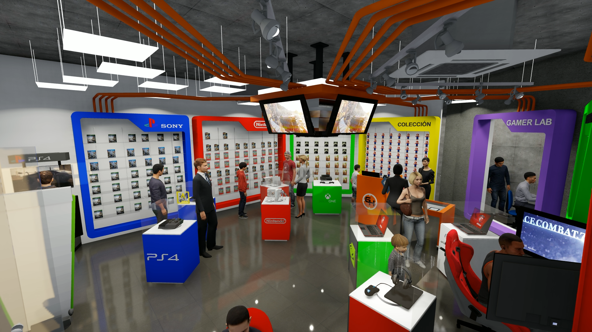

Tienda FX
FX es una empresa chilena, que comenzó sus operaciones en septiembre del año 1996,
transformándose durante este tiempo, en la mayor cadena de tiendas especialista en tecnología del país.
Empezamos nuestra historia enfocados en el rubro de las computadores de escritorio, pero crecimos sin parar hasta lograr un mix inigualable de productos tecnológicos, tanto para personas como para pequeñas y medianas empresas.
Tenemos –además de todo lo relacionado al rubro de la computación– opciones en telefonía, impresión, fotografía, audio, seguridad, domótica y entretenimiento (juegos, consolas y televisores).
!Bienvenidos al mundo de FX¡